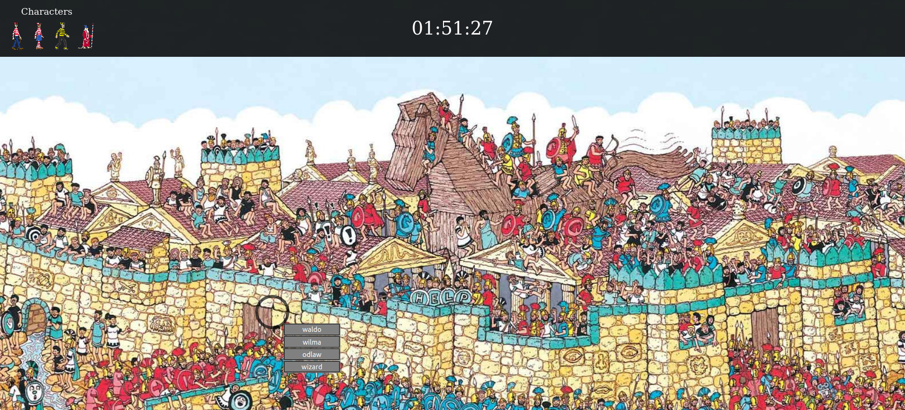

Here are some of the projects that I've done. You will find a link to the live site (where applicable) as well as a link to the source code.
There are more projects on my GitHub.
Thanks for looking!

- This is a fullstack Facebook clone with a lot of functionality.
- Built using MVC framework with Ruby on Rails, styled with Bootstrap, deployed on Heroku. When the user signs up, they have the option to create a new account or login via Facebook.
- This app utilizes a generated mailer to welcome user when they create a new account.
- Omniauth is utilized to allow login via Facebook.
- AWS S3 via Active Storage is utilized to allow an attachment/update of an avatar photo.
- A relational database is used to store users, posts, comments, friend requests, friendships, and likes.
- You can try this out by logging in with:
- Email: 'test@test.com' Password: 'password'
- Or feel free to create an account/login with Facebook!

- This is a fullstack photo tagging app that has you find all given characters in a photo.
- Built using React functional components on the front-end and Firebase on the back-end, deployed on Github Pages.
- Created custom CSS with animations and responsive design.
- This app utilizes Firebase Firestore, Firebase Storage, and Firebase authorization.
- Once the user begins, they choose a map, then a timer is started. The timer begins when the start button is pressed and continues until the final character is found.
- When the app starts, an anonymous account is generated, their score is placed into the database, then the anonymous account is logged out, and the database is cleaned up.
- If the user completes the task faster than someone on the top 10 scoreboard, they are placed onto the scoreboard
- Once the final character is found, the time taken is calculated from timestamps from the database, so no cheating can take place.

- The classic game of Battleship.
- In this project I utilized TDD with Jest.
- Packaged everything with Webpack, deployed on Github Pages.
- Created custom CSS with animations and responsive design.
- Using factory functions, modular design and a lot of event listeners, this app is a functional game that works well.
- The player can place ships with their mouse. They can click the orientation button to flip between 'x' and 'y', and click to place the ship. Logic was included to not allow ships to overflow off the board, and also not overlap another ship.
- When placing ships, the squares are highlighted to show where they will be placed, and once placed, the ship renders on the board so the player knows where other ships are located.
- Computer ships are placed randomly.

- This is a game to test your memory.
- Built using React hooks, deployed on Github pages.
- Created custom CSS with animations and responsive design.
- Play by clicking each card only once. If player selects the same card twice, their score will go to 0 and they will get an alert stating that they selected a card twice.
- Event listeners were used to listen for a click on each card, modify state to ackowledge that this card has been chosen, then each click checks whether that card has been selected yet or not.

- A ToDo list.
- A vanilla JavaScript, modular app, packaged with Webpack, deployed on Github Pages.
- Custom CSS with animations and responsive design.
- All tasks/projects are saved locally using LocalStorage.
- Projects are listed in tabs on the top, which have an event listener for deletion as well as selection.
- Each task is color-coded based on priority.
- Tasks can be created, edited, and deleted.

- A command line chess game.
- You can either play this game locally if you have ruby installed, or play it on my repl.it.
- If you play on repl.it, in the command line on the right, type "cd lib", then hit "enter". Then type "ruby game.rb".
- If you play on locally, in the command line, navigate to chess/lib then type "cd lib", then hit "enter". Then type "ruby game.rb".
- The game should allow you to play through. If you're playing locally, you can save the game at any time. I did this usling yaml.